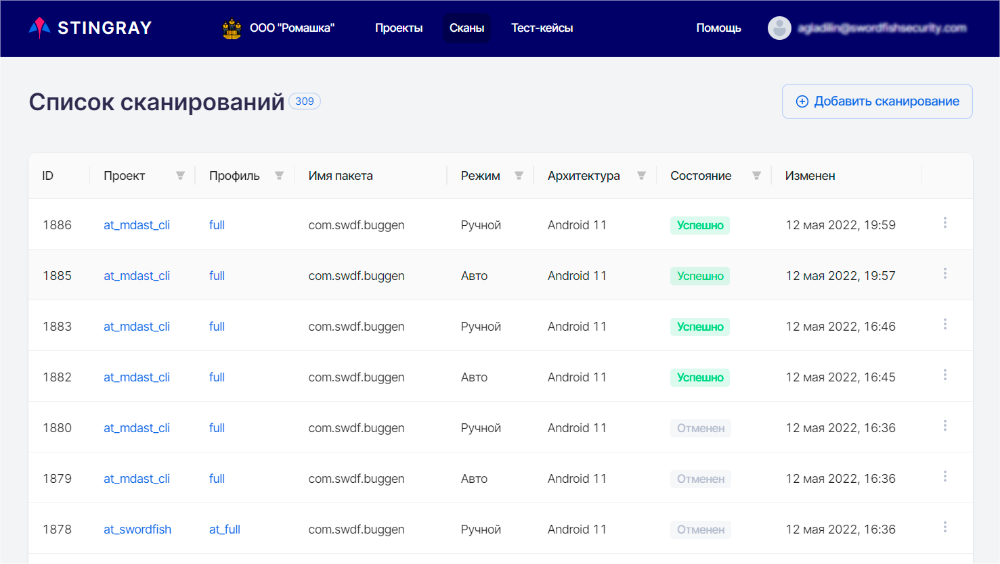
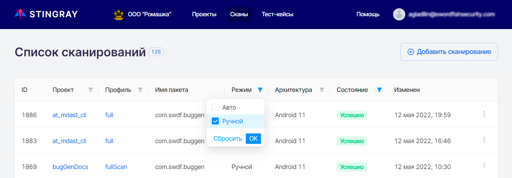
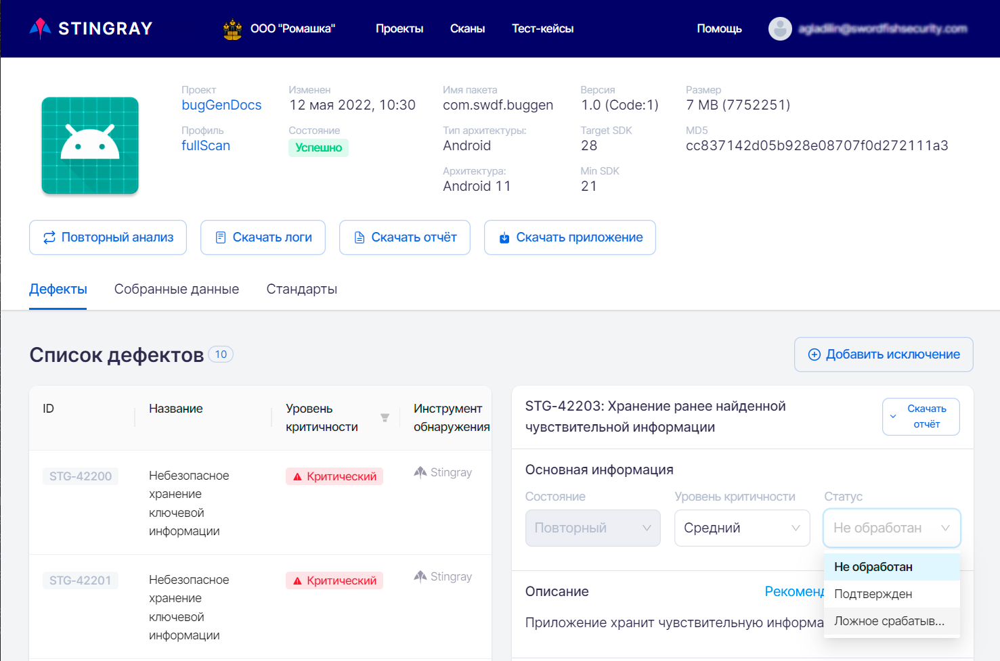
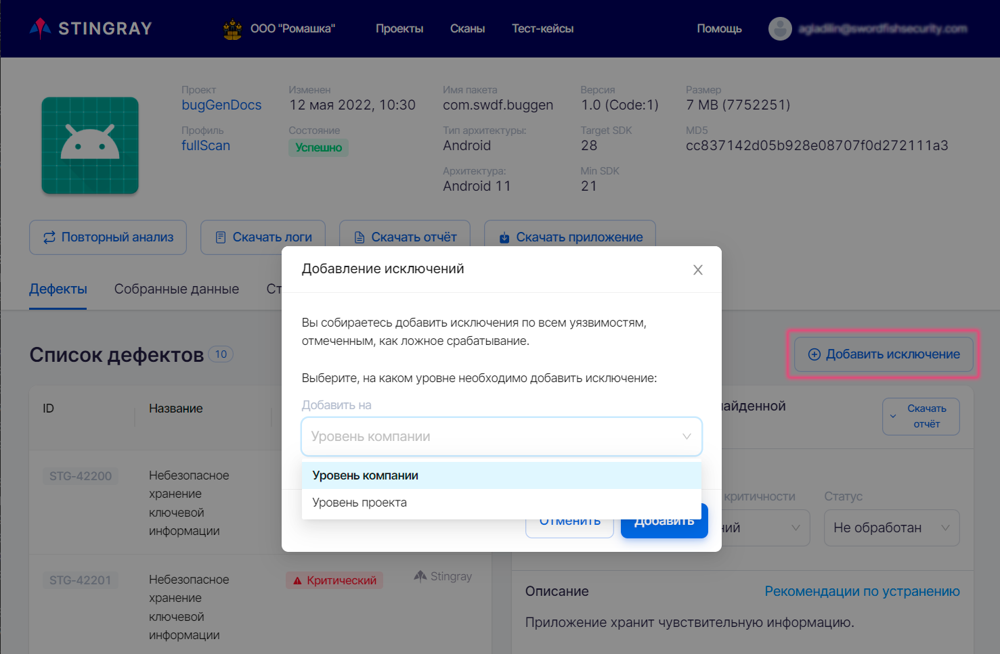
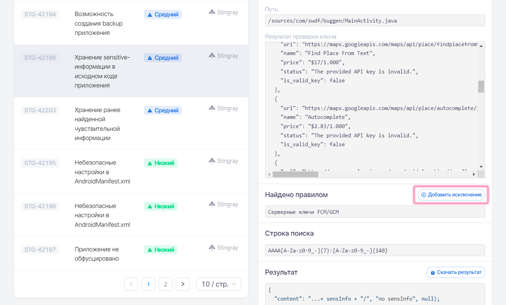
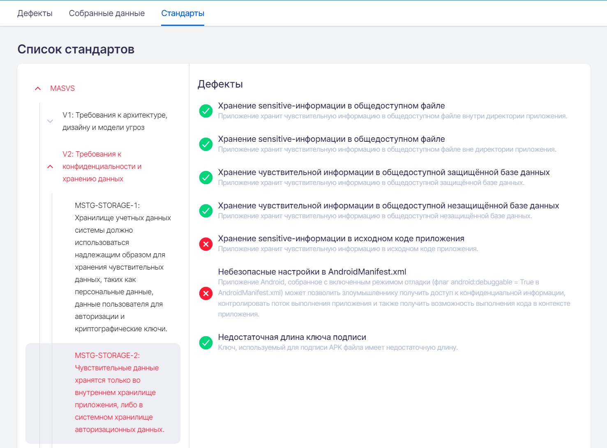
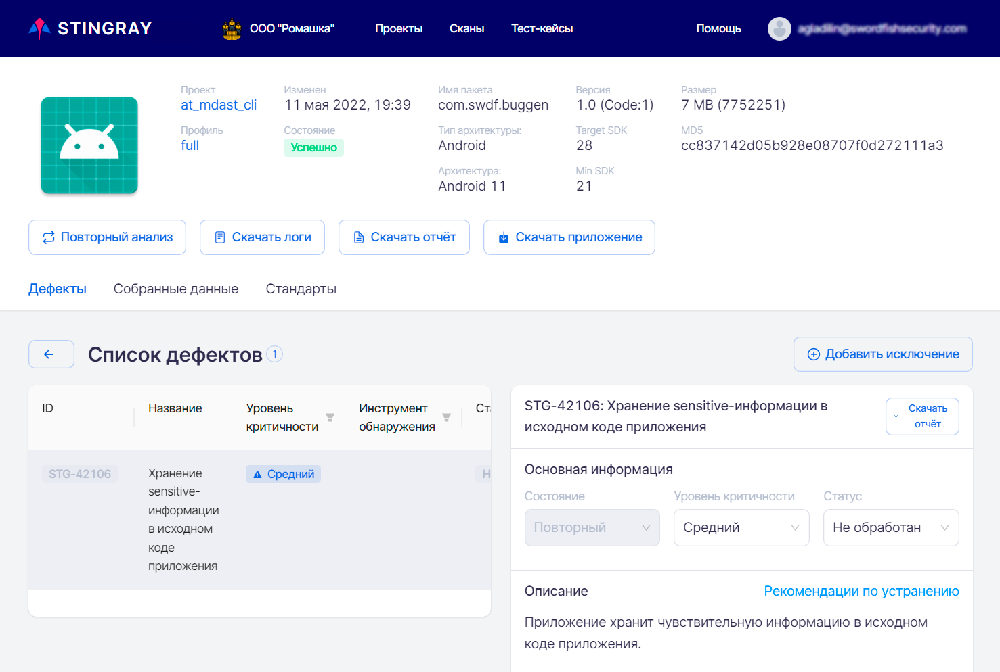

Результаты сканирований
Список результатов
При выборе пункта меню Сканы отображается список всех проведенных сканирований. Каждое сканирование представлено одной строкой. Данные о результатах сканирований автоматически обновляются каждые 10 секунд, что освобождает пользователя от необходимости обновлять страницу вручную.

В списке отображаются сканирования, отсортированные по ID сканирования. В таблице присутствует следующая информация:
- ID — внутренний идентификатор сканирования. При нажатии на ID сканирования происходит переход к детальным результатам выбранного сканирования.
- Проект — имя проекта, в рамках которого проводилось сканирование. Данное значение представлено в виде ссылки, нажав которую можно перейти в соответствующий проект.
- Профиль — профиль сканирования, с которым было проанализировано приложение. Данное значение представлено в виде ссылки, нажав которую можно перейти в соответствующий профиль сканирования.
- Имя пакета анализируемого приложения.
- Режим — режим сканирования, ручной или автоматический.
- Архитектура — тип архитектуры, на которой было проведено сканирование (Android или iOS).
- Имя пакета анализируемого приложения.
- Состояние — статус сканирования, может принимать несколько значений:
- Успешно — сканирование завершилось без ошибок. Если сканирование в целом прошло успешно, но наблюдались сбои в работе отдельных модулей, рядом со статусом отображается значок
 . При наведении на него курсора появляется более подробная информация о сбоях.
. При наведении на него курсора появляется более подробная информация о сбоях. - Создан — сканирование создано и помещено в очередь сканирования.
- Запускается — сканирование запущено, идет процесс установки и запуска целевого приложения.
- Запущен — происходит процесс сканирования.
- Анализ — сканирование остановлено, осуществляется процесс анализа собранной информации.
- Отменен — сканирование отменено с использованием расположенного справа раскрывающегося меню.
- Неуспешно — сканирование завершено с ошибкой. Рядом со статусом отображается значок
 . При наведении на него курсора появляется более подробная информация об ошибке.
. При наведении на него курсора появляется более подробная информация об ошибке. - Ожидание повторного анализа — был запущен и еще не завершился повторный анализ результатов сканирования.
- Успешно — сканирование завершилось без ошибок. Если сканирование в целом прошло успешно, но наблюдались сбои в работе отдельных модулей, рядом со статусом отображается значок
- Изменен — время последнего изменения статуса сканирования.
Для отображения только необходимых результатов в колонках, отмеченных значком фильтра  , предусмотрена установка фильтра. После установки фильтра в колонке цвет значка меняется на синий
, предусмотрена установка фильтра. После установки фильтра в колонке цвет значка меняется на синий  . При выборе нескольких фильтров они работают вместе, то есть при выборе режима Ручной и состояния Успешно будут найдены и отображены все успешно завершившиеся сканирования с ручным режимом запуска.
. При выборе нескольких фильтров они работают вместе, то есть при выборе режима Ручной и состояния Успешно будут найдены и отображены все успешно завершившиеся сканирования с ручным режимом запуска.

Чтобы убрать установленный фильтр, нажмите на значок фильтра и выберите пункт Сбросить в выпадающем меню:

Кроме этого, находясь на данной странице, можно:
- Открыть страницу с детальными результатами сканирования.
- Скачать PDF-отчет о сканировании.
- Инициировать повторный анализ.
- Удалить результаты сканирования.
Для выполнения перечисленных действий используйте соответствующие пункты расположенного справа раскрывающегося меню «»:

Результаты сканирования
Чтобы перейти на страницу с детальными результатами сканирования, нажмите либо на строку нужного сканирования в таблице Список сканирований, либо на расположенное справа в строке сканирования раскрывающееся меню «» и выберите пункт Открыть. На открывшейся странице содержится вся информация по анализу приложения: общая информация, выявленные уязвимости, собранные за время работы приложения данные, соответствие стандартам и требованиям. Для выбора доступно три или четыре вкладки в зависимости от режима сканирования: Дефекты, Собранные данные, Стандарты, Запись сканирования. Последняя вкладка присутствует только у сканирований, проведенных в автоматическом режиме.
Общая информация
Общая информация приведена в верхней части страницы с детальными результатами сканирования. Она содержит сведения о проведенном сканировании и краткую информацию о проверенном приложении.

Здесь представлена следующая общая информация по сканированию:
- Проект, в рамках которого проводилось сканирование. Данное значение представлено в виде ссылки, нажав которую можно перейти в соответствующий проект.
- Профиль, в рамках которого проводилось сканирование. Данное значение представлено в виде ссылки, нажав которую можно перейти в соответствующий профиль сканирования.
- Тест-кейс — название используемого тест-кейса. Данное значение представлено в виде ссылки, нажав которую можно перейти на страницу соответствующего тест-кейса. Это поле присутствует только у сканирований, проведенных в автоматическом режиме.
- Изменен — дата сканирования.
- Состояние — статус проведенного сканирования.
- Имя пакета — название пакета приложения в системе.
- Тип архитектуры / Архитектура — архитектура сканируемого приложения (Android или iOS).
- Версия — название и код версии, указанные в манифесте приложения для более точной идентификации анализируемого приложения.
- Target SDK/Min SDK — версии SDK, для которых собрано данное приложение
- Размер — размер загруженного файла приложения.
- MD5 — хеш-сумма загруженного файла приложения.
Кнопки, расположенные ниже общей информации, позволяют выполнить следующие действия:
- Повторный анализ — провести повторный анализ результатов сканирования с применением актуальных правил анализа уязвимостей для данного приложения.
- Скачать логи — скачать лог-файл сканирования.
- Скачать отчет — получить подробный отчет о результатах сканирования в формате PDF.
- Скачать приложение — скачать файл сканируемого приложения.
Дефекты
На каждую выявленную уязвимость системой заводится дефект. Все найденные во время сканирования дефекты показаны в Списке дефектов в левой половине вкладки Дефекты. В правой части данной вкладки представлена информация о выявленной уязвимости с ее детальным описанием, а также даны рекомендации по ее устранению.

Для удобства работы с дефектами в колонках, отмеченных значком фильтра , существует возможность выбрать и применить для отображаемых дефектов фильтр. Для этого нажмите значок фильтра и выберите из выпадающих списков одно или несколько значений для фильтрации по параметрам Уровень критичности и Инструмент обнаружения. Если выбран уровень критичности Высокий и инструмент обнаружения Stingray, то будут отображаться все обнаруженные системой Stingray дефекты с высоким уровнем критичности. При установке фильтра в колонке цвет значка меняется на синий . Чтобы убрать установленный фильтр, нажмите на значок фильтра и выберите пункт Сбросить в выпадающем меню.
На вкладке Дефекты представлены следующие сведения о дефекте:
- ID дефекта в системе.
- Название обнаруженной уязвимости.
- Уровень критичности дефекта (Критический, Высокий, Средний, Низкий, Инфо).
- Инструмент обнаружения — название инструмента, обнаружившего дефект (Stingray, Appscreener, Oversecured).
- Статус дефекта (Не обработан, Подтвержден, Ложное срабатывание).
Начальное заполнение значений полей дефектов производится системой автоматически во время анализа результатов.
При нажатии на дефект в Списке дефектов справа отображается детальная информация о нем.

Приводится следующая информация:
- ID дефекта в системе.
- Название выявленной уязвимости. Рядом с названием располагается кнопка Скачать отчет, нажав которую можно получить отчет об уязвимости в формате PDF.
- Состояние дефекта:
- Новый — если этот дефект был впервые найден во время этого сканирования, либо он уже встречался ранее, а затем проблема была решена и дефект был закрыт, но при этом сканировании вновь проявился.
- Повторный — если этот дефект был уже ранее найден во время предыдущих сканирований.
- Исправленный — это состояние для тех дефектов, которые были найдены в предыдущих сканированиях, но в текущем сканировании их уже нет.
- Уровень критичности дефекта. В этом поле отображается текущее значение критичности дефекта и предоставляется возможность поменять критичность, выбрав новое значение из выпадающего списка.
- Статус дефекта. В этом поле отображается текущий статус дефекта и предоставляется возможность поменять статус, выбрав новое значение из выпадающего списка.
- Описание дефекта в краткой форме характеризует найденную уязвимость.
-
Рядом с Описанием располагается ссылка на Рекомендации по устранению с подробным описанием уязвимости, рекомендациями по исправлению, примерами исходного кода и ссылками на материалы по этой уязвимости.
Примечание
Отдельно следует отметить дефекты, выявленные модулем Поиск ранее найденной чувствительной информации. В поле Описание таких дефектов, кроме упомянутой выше информации, можно найти ссылку Смотреть детали на уязвимости, которые послужили основанием для создания такого дефекта.

-
Место возникновения дефекта. Если обнаружено несколько уязвимостей одного типа, они группируются в один дефект, а справа от данного поля появляются стрелки , с помощью которых можно переходить между уязвимостями. Ниже приводится важная фактическая информация по найденной уязвимости, например, обнаруженная чувствительная информация, место ее обнаружения, и т. п. Для удобной работы с информацией из этих полей можно использовать расположенную в них справа кнопку Скопировать.
- В поле Результат отображается фрагмент кода или содержимое файла (до 5000 знаков), в котором обнаружена уязвимость. Если необходимо загрузить соответствующий файл целиком, нажмите кнопку Скачать результат, расположенную справа.
Если в результате анализа были найдены уязвимости, которые определяются нами как ложные срабатывания, они могут быть добавлены в исключения как на уровне проекта, так и на уровне компании (ко всем проектам компании). Для этого необходимо выбрать один или несколько обнаруженных дефектов, изменить их Статус на «Ложное срабатывание» и нажать кнопку Добавить исключение, расположенную в верхнем правом углу вкладки Дефекты.

В появившемся окне Добавление исключений выберите, на каком уровне вы хотите добавить исключения — на уровне проекта или на уровне компании, а затем нажмите кнопку Добавить.

Также можно добавить исключение для отдельной уязвимости, нажав кнопку Добавить исключение рядом с заголовком Найдено правилом в описании соответствующей уязвимости.

В появившемся окне Добавление исключения выберите, на каком уровне вы хотите добавить исключение — на уровне проекта или на уровне компании, а затем нажмите кнопку Добавить.
В результате добавления исключений, при повторном анализе результатов или при следующем сканировании в рамках этого проекта, если выбран уровень проекта, или для всех проектов компании, если выбран уровень компании, такие уязвимости учитываться не будут.
Собранные данные
Для работы с собранными в ходе сканирования данными выберите вкладку Собранные данные на странице с детальными результатами сканирования.
На вкладке Собранные данные отображается вся информация о работе приложения, собранная за время сканирования. Информация разделена по модулям, которые отвечают за сбор данных. Для модулей предусмотрена возможность скачивания собранных данных в виде zip-архива с помощью кнопки Скачать данные модуля, или же, возможно скачать все данные сканирования сразу в одном архиве с помощью кнопки Скачать все данные.

На данной вкладке доступны данные, собранные во время сканирования приложения всеми включенными в профиле модулями. Модуль для просмотра собранных данных может быть выбран в левой панели Списка собранных данных. Каждый из модулей собирает данные, специфичные только для него. Соответственно, формат представления данных на вкладке отличается для каждого модуля.
На рисунке выше в качестве примера приведены данные, собранные модулем Сетевая активность. В этом случае были собраны данные, переданные по сети — адрес, протокол, время, метод, порт, а также содержание запроса и ответа. Такого сорта дополнительная информация может оказаться полезной в работе с результатами анализа.
На рисунке ниже приведен еще один пример, иллюстрирующий другую область работы приложения — данные, собранные модулем Отслеживание Activity. Здесь Activity — это все различные экраны приложения, которые были запущены во время сканирования. Для каждого экрана (Activity) приведены его имя и параметры запуска.

Результаты работы всех модулей собраны в одной системе, что значительно упрощает их анализ. Такой подход обладает явными преимуществами по сравнению с ситуацией, когда данные о работе приложения последовательно и в различных форматах собираются несколькими утилитами.
Помимо предоставления пользователям возможности работы с собранными данными, система на их основе делает выводы об уязвимостях приложения. Правила анализа собранных данных для поиска уязвимостей подробно описаны в разделах «Правила» и «Правила анализа на уровне Компании».
Стандарты
Для работы с требованиями стандартов выберите на странице с детальными результатами сканирования вкладку Стандарты. На этой вкладке отображаются результаты проверки выполнения требований для просканированного приложения. На вкладке Стандарты представлено соответствие стандартам безопасности, выбранным в профиле сканирования. Требования, категории требований и стандарты, в которых были выявлены несоответствия, отмечаются красным цветом.

Если кликнуть мышкой по невыполненному требованию, отмеченному красным цветом на вкладке в левой части, в правой части на вкладке Дефекты появится список типов дефектов, которые были проверены для выбранного требования.

В случае обнаружения дефектов определенного типа при проверке требования, этот тип дефектов отмечается значком , а само требование считается невыполненным и отмечается красным цветом. Если дефектов определенного типа при проверке требования выявлено не было, такой тип дефектов отмечается значком . Требование в целом считается выполненным, если при его проверке не было выявлено ни одного дефекта из числа относящихся к этому требованию типов дефектов.
При нажатии в области Дефекты на тип дефекта, отмеченного значком , появится окно с детальной информацией по дефектам данного типа:

Для возвращения к списку требований нажмите кнопку  в левом верхнем углу.
в левом верхнем углу.
На вкладке Стандарты доступны данные по выполнению требований всех выбранных в профиле сканирования стандартов. Если в профиле добавить еще один стандарт к списку проверяемых, то после этого при просмотре результатов всех уже ранее проведенных с этим профилем сканирований, на вкладке Стандарты будет отображаться также соответствие ранее собранных результатов и вновь выбранного в профиле стандарта.
Запись сканирования
Данная вкладка доступна только для результатов автоматического сканирования и предоставляет возможность просмотра видеозаписи проведенного сканирования и процесса выполнения тест-кейса.

Снимок экрана
Для сканирований, завершенных со статусом Неуспешно, причиной завершения которых стала невозможность запуска приложения на агенте, в результате сканирования доступна вкладка Снимок экрана, на которой сохранен снимок экрана эмулятора в момент возникновения ошибки.

Лог сканирования
Дополнительная вкладка Лог предоставляет возможность просмотра лога сканирования. Она доступна только во время анализа результатов сканирования.